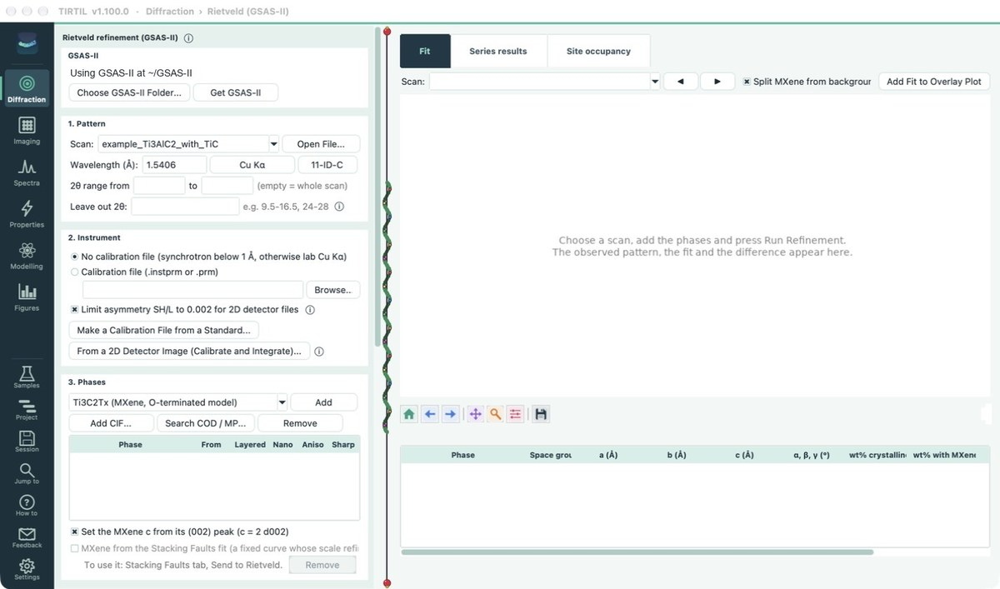
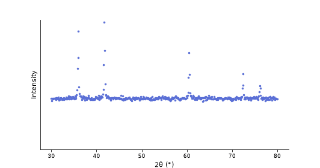

Diffraction
Rietveld (GSAS-II)
Phase fractions, cell and atoms from a full-pattern fit.

Steps
Choose GSAS-II Folder...Point TIRTIL to GSAS-II once (or use Get GSAS-II).Open File...Open a scan and an instrument file, or make one from a CeO2 or LaB6 standard.Add CIF...Add the phases: built-in, CIF files, or COD / Materials Project.Run RefinementRun: background and scale first, then cell, profile and atoms, step by step.Run on Seriesrefines every scan of a heating run, each starting from the last result.
How it works

Worked example
Rwp under about 10 % with a flat difference curve is a good fit. A wave in the difference under a peak means the peak shape or position is off, or a phase is missing.
In TIRTIL: How to (⌘/) › Try It With Example Data loads this example.